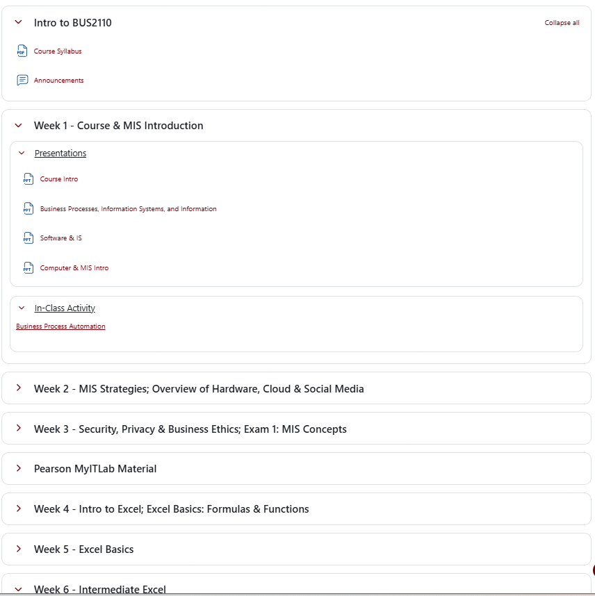
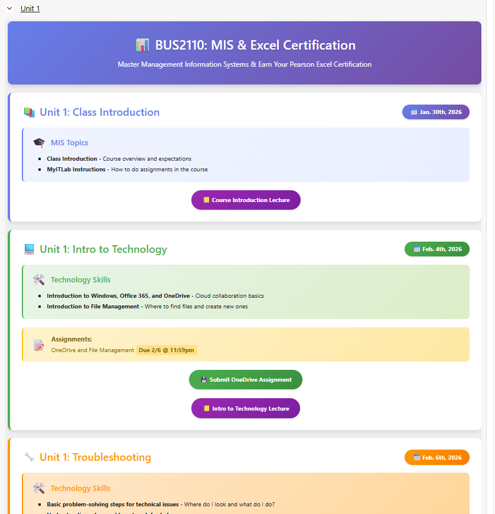
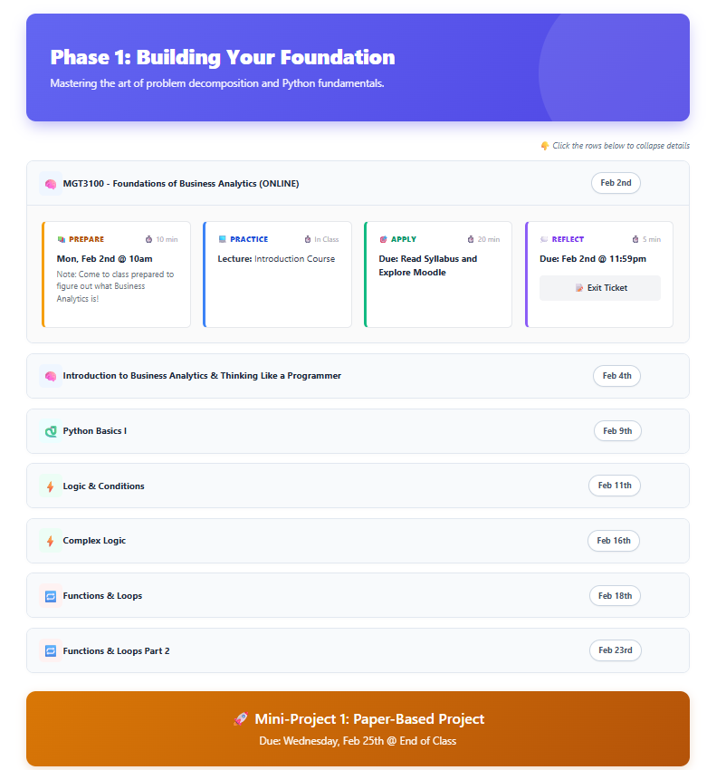

Tired of Templates?
Leveraging Generative AI to Create Engaging Courses in Learning Management Systems
Today’s Plan
- 10 minThe problem with templates
Why consistency and creativity trade off, and how others loosened it
- 20 minUX/UI principles for course pages
Hierarchy, grouping, color, scanning, phones, accessibility
- 10 minMake it yours
A course style brief and a signature element for your discipline
- 5 minThe technical minimum
Where the HTML goes and what the editor strips
- 10 minPrompting with your principles
Live demonstration you can follow along with
- 20 minYour turn, and questions
Audit a page you brought; we circulate to help
We were hired as subject-matter experts, not as interface designers — and course pages ask us to be both.
Writing the content is the job we trained for. Deciding how it should be arranged on screen, so a student can find it in ten seconds, is a different skill set entirely.
What Templates Fix, and What They Cost
What they fix
- Students find content in the same place in every course
- Instructors skip the blank page and start from structure
- Accessibility and heading order are handled up front
- Setup time drops from days to hours
What they cost
- Every course in the catalog reads the same way
- Disciplines with unusual material get forced into a grid
- Instructors lose the ability to emphasize what matters
- Changing anything means filing a ticket
The Trade-Off We Want to Remove
Build it yourself
Full creative control, at a cost in hours you do not have
Use the template
Fast and consistent, at a cost in voice and flexibility
Generative AI narrows the gap: you describe the page in plain language and get structure back in seconds, then spend your time on the parts only you can write.
What Templates Do
The skeleton
Where things live, what the sections are called, the order they appear in, the heading structure. This is what students learn once and reuse in every course.
The surface
Emphasis, voice, imagery, how much detail to fold away, what a discipline needs that no committee anticipated. This is what makes the course yours.
Three Steps, Start to Finish
Describe the page you want
In ordinary sentences, with your own course material pasted in.
Get back basic HTML
Simple tags and inline styles that your LMS editor will keep.
Paste, link, preview
Drop it into the HTML editor, add your real links, check student view.
No installation, no plugin, no request to your LMS administrator. Everything today happens in a browser tab and a text editor you already have.
Designing a Page Students Can Scan
Four Principles for Course Pages
One page, one purpose
A student arriving on a page should know within seconds what they are meant to do this week.
Chunk, then label
Three to five sections with real headings beat one long scroll of paragraphs.
Put actions where the eye lands
What is due, and the link to submit it, belongs near the top — not buried at the end.
Repeat the same shape every week
Predictability is what templates got right. You can keep it without giving up your own voice.
Hierarchy Comes From Three Levers
Students do not read a course page, they scan it. Size, weight, and space are what tell them the order to look in — and all three are things you can ask for by name.
Week 4: Regression
Read chapter 7 before Tuesday
Problem set 3 due Friday at 5pm
Optional: the dataset walkthrough video
Week 4: Regression
Problem set 3 due Friday at 5pm
Read chapter 7 before Tuesday
Optional: the dataset walkthrough video
Two type sizes and one bold weight are usually enough. More than three levels of emphasis reads as no emphasis at all.
Space Groups Things, Borders Rarely Do
Items that sit close together read as belonging together. Before adding a box or a rule, try changing the distance between things — it is the cheapest structure you can buy.
In a prompt:
Give Every Color One Job
Four pairs, used the same way in every module, teach students to read the page without instructions. Hand these hex codes to the AI instead of asking it to pick.
Use only these four callout colors (background / accent), and label each one in words: Information #D6E4F0 / #1F5C8B; Warning #FFF8E1 / #F39C12; Note #E8F8F5 / #27AE60; Caution #FDEDEC / #E74C3C.
Combines slides 12 and 22 so you can hand the AI the exact colors.
Each box still needs its label in words. A student who cannot distinguish the amber from the green should lose nothing.
Write Words Students Can Scan
The layout only helps if the words inside it are easy to pick up at a glance. Three rewrites cover most course pages.
| Before | After | |
|---|---|---|
| Headings say what to do | Week 4 Materials | Week 4: Read, Practice, Submit |
| Deadlines come first | Remember that the essay, which builds on last week, is due on Friday | Due Friday 5pm: Essay 2 |
| Steps, not paragraphs | To submit, first open your draft, then export it as a PDF and upload it below | 1. Open draft · 2. Export PDF · 3. Upload |
Ask the AI to rewrite your existing instructions for scanning without changing what they say:
Assume a Phone Screen
Students often check the course between classes, on a phone. A layout that works on your laptop can squeeze or overflow on a narrow screen.
One column beats three
Side-by-side layouts either stack or get crushed. Use them only where comparison matters.
Make links easy to tap
Wide, padded buttons for the main actions instead of small inline text links.
Keep the page short
Fold rubrics and optional material into collapsible sections.
Check before students do
Open the page in student view on your own phone before you announce it.
In a prompt:
A Module Page, Restructured

Every item carries the same weight, and the week’s actual work sits behind a collapsed heading.

A unit card per class day, the due date on a badge, topics grouped in a box, and the submission as a button.
Structure That Carries Your Pedagogy

The teaching model became the layout
No institutional template offers this shape, because it belongs to one instructor’s course design.
Students learn the rhythm once
Repeated identically down the page, so week nine needs no more explaining than week one.
Only today is expanded
A full phase fits on one screen, with the milestone project marked at the end of it.
Every class day opens into the same four moves: prepare, practice, apply, reflect — each with a time estimate attached.
Knowing Where to Stop
Once generating a page costs minutes, the limit on visual treatment stops being technical and becomes a judgment call.
What differs between the two pages: The first uses several accent colors, gradient headers, and icons in every heading. The second holds to one color per unit and lets spacing do the grouping. Both are a long way from the plain list. Neither is obviously the right amount.
- Is each color helping a student find something, or is it decoration?
- Would it still read well if every course in your program did the same thing?
- If you had to cut one visual element from your own page, which goes first?
Accessibility Rules to Keep
Never let color carry the meaning
A red box needs the word “Caution” in it, not just the red
Use headings in order
h2 then h3 then h4, never skipping a level — screen readers navigate by them
Describe every image
Alt text that says what the image conveys, not “image1.png”
Write link text that stands alone
“Week 3 reading guide”, not “click here”
Keep lines from running wide
Very wide single-column text is hard to track from line to line
Make It Yours: Customizing Within a Consistent Frame
Write a Course Style Brief Once
A short paragraph you paste at the top of every prompt. It keeps the course consistent with itself while looking like nobody else’s.
Course style brief: BIO 210 Accent color: #2E6B4F (forest green) Headings: short, action-first Every module page, in this order: Overview, This Week, Due, Go Deeper Callouts: blue for info, red for caution, always labeled in words Recurring feature: a "Field Note" box with one real-world example Tone: friendly, direct, second person
Swap in your own course, color, section order and tone, then paste it at the top of every prompt.
Structure
The fixed section order is what students learn once and rely on every week.
Identity
One accent color and one recurring feature make the course recognizably yours.
Voice
Tone and heading style keep generated copy sounding like you, not like a chatbot.
Same Skeleton, Different Disciplines
Templates struggle most with discipline-specific material. A signature element is the one recurring piece that only your kind of course needs.
A caution box at the top of every lab week
Discussion questions folded beneath each reading
A critique checklist before every review
An “In Practice” box tying the week to the workplace
The skeleton from your style brief stays fixed. The signature element is where your discipline shows.
Turning Principles Into Prompt Language
The Technical Minimum
Finding the HTML Editor
- Turn editing on in the course you want to change
- Add a page or a text-and-media area, or open an existing one
- In the toolbar, find the angle-bracket button, sometimes labelled source code
- Paste your HTML into the panel that opens
- Save and display, then preview before you tell anyone about it
If you cannot find the button. Source view is an editor setting your administrator controls. Ask for it by name:
Your Editor Will Not Keep Everything
Course editors sanitize what you paste. Anything the theme cannot control gets stripped, usually without telling you. Four things reliably disappear.
<script>JavaScript is removed on save, every time
class="…"CSS classes point at stylesheets you do not control
<style>Style blocks and external sheets rarely survive
<iframe>Often blocked by institution, or limited to approved domains
The practical consequence: everything you build should be plain tags with styles written directly on the element.
Three Blocks Cover Most Pages
Callout box
<div style='background:#D6E4F0; border-left:5px solid #1F5C8B;'> … </div>
Key concepts, warnings, deadlines
Two columns
<table>
<tr>
<td>…</td><td>…</td>
</tr>
</table>Comparisons, paired resources
Collapsible
<details> <summary>…</summary> … </details>
Rubrics, optional readings, long instructions
You do not need to write these. You need to recognize them well enough to ask for them, and to notice when a closing tag is missing.
Prompting for LMS-Safe HTML
Anatomy of a Prompt
You are an instructional designer building for a Moodle LMS. Use only basic HTML tags (p, h2, h3, ul, li, strong, em, div, span) and simple inline styles. No CSS classes, no stylesheets, no JavaScript. Create a weekly module landing page with a header, a "This Week at a Glance" list, a callout box with the weekly objective, and three buttons using href='#'. Follow my course style brief: [paste] Here is my content: [paste]
Replace each [paste] with your style brief and your own course content before sending.
- Give it a rolePrimes the model before it sees a word of your content
- State constraints up frontThis is the line that keeps your LMS from stripping the output
- Describe the page in partsName each section you want, in the order you want it
- Then paste your materialContent last, and mind what you upload — copyright still applies
Ask for Placeholders, Add Links Yourself
Never paste real course URLs into an AI prompt. They are session-based and permission-locked, and they will break for students.
- Ask for the structure with href='#' everywhere a link belongs
- Paste the output into your LMS HTML editor
- Replace each placeholder with the real activity link, by hand
- Switch to student view and click every one
Also ask for signposts
Request comments so you can see exactly where each piece goes when you scan the code.
Habits That Improve the Output
Show an example you like
Paste in HTML you already approve of and ask for something similar
Build one piece at a time
A module page is easier in four small prompts than one large one
Correct, do not restart
Stay in the same conversation and say what to change
Ask for two versions
One minimal, one more styled, then pick
Have it explain its own code
Plain-language notes make the file easy to hand to a colleague
Close with the output format
Audit One Page in Your Own Course
Three Steps, Fifteen Minutes
Pick the page students ask about most
Look at it as a student would. Where does the eye land first? What is impossible to find?
Write the prompt and generate
Your style brief, then constraints, then the sections you want, then your content. Use placeholder links.
Paste, link, and preview
Into the HTML editor, swap in your real links, then check it in student view before you save for good.
Stuck on the toolbar button, a stripped style, or a prompt that will not cooperate? That is what we are here for.
Before You Publish
Take the Guide With You
Every prompt, code sample, and color pair from today is written out in the handout, along with the pieces we did not have time for: media embeds, resource tables, and troubleshooting.
We are happy to stay after the session.
The Prompt Library
Every prompt, phrase, color pair and code shape from the presentation, plus extra complete prompts and starter templates marked New, in one place. Each has its own Copy button, or copy everything at once and paste it into your notes.
1 · Start here: the full prompt and your style brief
You are an instructional designer building for a Moodle LMS. Use only basic HTML tags (p, h2, h3, ul, li, strong, em, div, span) and simple inline styles. No CSS classes, no stylesheets, no JavaScript. Create a weekly module landing page with a header, a "This Week at a Glance" list, a callout box with the weekly objective, and three buttons using href='#'. Follow my course style brief: [paste] Here is my content: [paste]
Course style brief: BIO 210 Accent color: #2E6B4F (forest green) Headings: short, action-first Every module page, in this order: Overview, This Week, Due, Go Deeper Callouts: blue for info, red for caution, always labeled in words Recurring feature: a "Field Note" box with one real-world example Tone: friendly, direct, second person
2 · Complete prompts that build a page from scratch, with fill-in marks New
You are an instructional designer building for [LMS NAME, e.g., Moodle]. (Replace the bracketed LMS name with Canvas, Blackboard, D2L, etc. if needed.) Use only basic HTML tags (p, h2, h3, ul, li, strong, em, div, span, a, table, tr, th, td, details, summary) and simple inline styles. No CSS classes, no stylesheets, no style blocks, no JavaScript, no iframes. Headings run h2 then h3, never skipping a level. Never rely on color alone: label each callout in words. Create a course home (welcome) page with: - a banner with the course code, the title, and a one-sentence promise - a blue callout labeled "Start here" - a "How this course works" list of three to five short bullets - three full-width link buttons (Course syllabus, This week's module, Ask a question) using href='#' - an optional welcome video spot - a "Your instructor" section with email and office hours If my content below covers an item, fill it in. Only leave a placeholder where I have not given you the information. Placeholder and comment rules: 1. Wherever I need to add my own information, write a visible placeholder in [BRACKETED CAPS] that says exactly what belongs there. 2. Put an HTML comment directly above each section that starts with EDIT: and tells me what to change and what to leave alone. 3. For every link, use href='#' and put <!-- ADD LINK: name of the activity or file --> right after the tag. 4. For every image, include an img tag with src='#' and alt='[DESCRIBE WHAT THE IMAGE SHOWS]', plus <!-- ADD IMAGE: what goes here -->. 5. For embedded media, leave <!-- PASTE VIDEO EMBED HERE: what the video is --> and do not write an iframe. 6. For anything optional, add <!-- OPTIONAL: delete this section if you do not need it -->. 7. Do not invent dates, names, policies, grades, or links. If I did not give you the information, leave a placeholder. Follow my course style brief: [paste] Here is my content: [paste] Return clean HTML I can paste directly into the HTML editor.
Replace [LMS NAME], then both [paste] spots. The rules inside tell the AI to leave visible placeholders and comments instead of guessing.
You are an instructional designer building for [LMS NAME, e.g., Moodle]. (Replace the bracketed LMS name with Canvas, Blackboard, D2L, etc. if needed.) Use only basic HTML tags (p, h2, h3, ul, li, strong, em, div, span, a, table, tr, th, td, details, summary) and simple inline styles. No CSS classes, no stylesheets, no style blocks, no JavaScript, no iframes. Headings run h2 then h3, never skipping a level. Never rely on color alone: label each callout in words. Create a syllabus-style information page with: - a title block with course code, title, semester, meeting times, and credit hours - a short course description - a bulleted list of learning outcomes, each starting with an action verb - an amber callout labeled "Important dates" - a materials section - a grading table with component and weight columns - course policies (attendance, late work, use of generative AI, academic integrity, accessibility and accommodations), each in its own collapsible section - one link button to download the syllabus as a PDF, using href='#' If my content below covers an item, fill it in. Only leave a placeholder where I have not given you the information. Never write a policy for me; use my wording or leave the placeholder. Placeholder and comment rules: 1. Wherever I need to add my own information, write a visible placeholder in [BRACKETED CAPS] that says exactly what belongs there. 2. Put an HTML comment directly above each section that starts with EDIT: and tells me what to change and what to leave alone. 3. For every link, use href='#' and put <!-- ADD LINK: name of the activity or file --> right after the tag. 4. For every image, include an img tag with src='#' and alt='[DESCRIBE WHAT THE IMAGE SHOWS]', plus <!-- ADD IMAGE: what goes here -->. 5. For embedded media, leave <!-- PASTE VIDEO EMBED HERE: what the video is --> and do not write an iframe. 6. For anything optional, add <!-- OPTIONAL: delete this section if you do not need it -->. 7. Do not invent dates, names, policies, grades, or links. If I did not give you the information, leave a placeholder. Follow my course style brief: [paste] Here is my content: [paste] Return clean HTML I can paste directly into the HTML editor.
The AI is told never to write policies for you; it uses your wording or leaves a placeholder.
3 · Prompts with a starter HTML template inside: edit it, then send New
Each prompt below already contains a full template. Paste it into your AI tool, then edit the bracketed items and the two [paste] spots with your own course details before sending. Or copy only the template (next two boxes) and paste it straight into your LMS HTML editor to fill in by hand.
You are an instructional designer building for [LMS NAME, e.g., Moodle]. (Replace the bracketed LMS name with Canvas, Blackboard, D2L, etc. if needed.)
Below is a starter HTML template for a course home (welcome) page. Keep its structure, section order, and inline styles exactly. Replace every [BRACKETED PLACEHOLDER] with my content (further below). If I did not give you information for a placeholder, leave it in brackets. Keep all EDIT, ADD, and OPTIONAL comments. Change the accent color #2E6B4F to [MY ACCENT COLOR HEX CODE]. Do not add scripts, classes, style blocks, or iframes. Do not invent dates, names, policies, grades, or links.
=== STARTER TEMPLATE (edit it first if you like) ===
<!-- EDIT: Replace everything in [BRACKETS] with your own information. Delete these comments before publishing if you like. -->
<div style="max-width:720px; margin:0 auto; font-family:Arial, Helvetica, sans-serif; line-height:1.6; color:#1A1A1A;">
<!-- EDIT: Banner. Change the color #2E6B4F to your course accent color. -->
<div style="background:#2E6B4F; color:#FFFFFF; padding:24px; border-radius:8px;">
<h2 style="margin:0 0 6px 0; font-size:28px; color:#FFFFFF;">[COURSE CODE]: [COURSE TITLE]</h2>
<p style="margin:0; font-size:16px;">[ONE SENTENCE: WHAT STUDENTS WILL BE ABLE TO DO BY THE END OF THE COURSE]</p>
</div>
<!-- EDIT: Start here box. Keep the word "Start here" so the box is labeled in words, not just color. -->
<div style="background:#D6E4F0; border-left:5px solid #1F5C8B; padding:14px 18px; margin:20px 0;">
<p style="margin:0;"><strong>Start here:</strong> [THE ONE THING STUDENTS SHOULD DO FIRST]</p>
</div>
<!-- EDIT: How the course works. Keep it to three to five short bullets. -->
<h3 style="margin:24px 0 8px 0;">How this course works</h3>
<ul style="margin:0; padding-left:22px;">
<li>[HOW AND WHEN CLASS MEETS]</li>
<li>[HOW STUDENTS SUBMIT WORK]</li>
<li>[HOW STUDENTS GET HELP]</li>
</ul>
<!-- EDIT: Link buttons. Keep the link text descriptive. -->
<h3 style="margin:24px 0 8px 0;">Quick links</h3>
<a href="#" style="display:block; background:#2E6B4F; color:#FFFFFF; text-decoration:none; text-align:center; padding:14px 18px; border-radius:6px; margin-bottom:10px;">[Course syllabus]</a> <!-- ADD LINK: syllabus page or file -->
<a href="#" style="display:block; background:#2E6B4F; color:#FFFFFF; text-decoration:none; text-align:center; padding:14px 18px; border-radius:6px; margin-bottom:10px;">[This week's module]</a> <!-- ADD LINK: current module page -->
<a href="#" style="display:block; background:#2E6B4F; color:#FFFFFF; text-decoration:none; text-align:center; padding:14px 18px; border-radius:6px; margin-bottom:10px;">[Ask a question]</a> <!-- ADD LINK: question forum -->
<!-- OPTIONAL: delete this section if you do not have a welcome video. -->
<h3 style="margin:24px 0 8px 0;">Welcome video</h3>
<!-- PASTE VIDEO EMBED HERE: [ONE-LINE DESCRIPTION OF THE VIDEO] -->
<!-- EDIT: Instructor details. -->
<h3 style="margin:24px 0 8px 0;">Your instructor</h3>
<p style="margin:0;">[YOUR NAME], [YOUR TITLE]<br>
Email: [YOUR EMAIL]<br>
Office hours: [DAYS, TIMES, AND LOCATION OR VIDEO LINK]</p>
</div>
=== END TEMPLATE ===
Follow my course style brief: [paste]
Here is my content: [paste]
Return clean HTML I can paste directly into the HTML editor.You are an instructional designer building for [LMS NAME, e.g., Moodle]. (Replace the bracketed LMS name with Canvas, Blackboard, D2L, etc. if needed.)
Below is a starter HTML template for a syllabus-style information page. Keep its structure, section order, and inline styles exactly. Replace every [BRACKETED PLACEHOLDER] with my content (further below). If I did not give you information for a placeholder, leave it in brackets. Keep all EDIT, ADD, and OPTIONAL comments. Change the accent color #2E6B4F to [MY ACCENT COLOR HEX CODE]. Do not add scripts, classes, style blocks, or iframes. Do not invent dates, names, policies, grades, or links.
=== STARTER TEMPLATE (edit it first if you like) ===
<!-- EDIT: Replace everything in [BRACKETS] with your own information. Delete these comments before publishing if you like. -->
<div style="max-width:720px; margin:0 auto; font-family:Arial, Helvetica, sans-serif; line-height:1.6; color:#1A1A1A;">
<!-- EDIT: Title block. Change the color #2E6B4F to your course accent color. -->
<div style="border-bottom:4px solid #2E6B4F; padding-bottom:10px; margin-bottom:20px;">
<h2 style="margin:0; font-size:28px;">[COURSE CODE]: [COURSE TITLE]</h2>
<p style="margin:4px 0 0 0;">[SEMESTER AND YEAR] · [MEETING DAYS, TIMES, AND ROOM] · [CREDIT HOURS]</p>
</div>
<!-- EDIT: Course description. Two to four sentences. -->
<h3 style="margin:24px 0 8px 0;">Course description</h3>
<p style="margin:0;">[YOUR COURSE DESCRIPTION]</p>
<!-- EDIT: Learning outcomes. Start each with an action verb. Add or remove bullets. -->
<h3 style="margin:24px 0 8px 0;">What you will be able to do</h3>
<ul style="margin:0; padding-left:22px;">
<li>[LEARNING OUTCOME 1]</li>
<li>[LEARNING OUTCOME 2]</li>
<li>[LEARNING OUTCOME 3]</li>
</ul>
<!-- EDIT: Key dates box. The word "Important dates" labels the box in words. -->
<div style="background:#FFF8E1; border-left:5px solid #F39C12; padding:14px 18px; margin:24px 0;">
<p style="margin:0 0 6px 0;"><strong>Important dates:</strong></p>
<ul style="margin:0; padding-left:22px;">
<li>[DATE]: [EXAM, MAJOR PROJECT, OR DEADLINE]</li>
<li>[DATE]: [EXAM, MAJOR PROJECT, OR DEADLINE]</li>
</ul>
</div>
<!-- EDIT: Materials. -->
<h3 style="margin:24px 0 8px 0;">Materials</h3>
<p style="margin:0;">[REQUIRED TEXT OR SOFTWARE, AND WHERE TO GET IT]</p>
<!-- EDIT: Grading table. Add or remove rows. Percentages should total 100%. -->
<h3 style="margin:24px 0 8px 0;">How your grade is calculated</h3>
<table style="width:100%; border-collapse:collapse;">
<tr><th style="text-align:left; padding:8px 10px; border-bottom:2px solid #2E6B4F;">Component</th><th style="text-align:left; padding:8px 10px; border-bottom:2px solid #2E6B4F;">Weight</th></tr>
<tr><td style="padding:8px 10px; border-bottom:1px solid #D9D9D9;">[ASSIGNMENT CATEGORY 1]</td><td style="padding:8px 10px; border-bottom:1px solid #D9D9D9;">[__]%</td></tr>
<tr><td style="padding:8px 10px; border-bottom:1px solid #D9D9D9;">[ASSIGNMENT CATEGORY 2]</td><td style="padding:8px 10px; border-bottom:1px solid #D9D9D9;">[__]%</td></tr>
<tr><td style="padding:8px 10px; border-bottom:1px solid #D9D9D9;">[ASSIGNMENT CATEGORY 3]</td><td style="padding:8px 10px; border-bottom:1px solid #D9D9D9;">[__]%</td></tr>
</table>
<!-- EDIT: Policies. Each one folds away. Keep the summary text short and specific. -->
<h3 style="margin:24px 0 8px 0;">Course policies</h3>
<details style="border:1px solid #D9D9D9; border-radius:6px; padding:10px 14px; margin-bottom:10px;">
<summary><strong>Attendance</strong></summary>
<p style="margin:8px 0 0 0;">[YOUR ATTENDANCE POLICY]</p>
</details>
<details style="border:1px solid #D9D9D9; border-radius:6px; padding:10px 14px; margin-bottom:10px;">
<summary><strong>Late work</strong></summary>
<p style="margin:8px 0 0 0;">[YOUR LATE WORK POLICY]</p>
</details>
<details style="border:1px solid #D9D9D9; border-radius:6px; padding:10px 14px; margin-bottom:10px;">
<summary><strong>Use of generative AI</strong></summary>
<p style="margin:8px 0 0 0;">[YOUR AI USE POLICY: WHAT IS ALLOWED, WHAT IS NOT, AND HOW TO DISCLOSE]</p>
</details>
<details style="border:1px solid #D9D9D9; border-radius:6px; padding:10px 14px; margin-bottom:10px;">
<summary><strong>Academic integrity</strong></summary>
<p style="margin:8px 0 0 0;">[YOUR ACADEMIC INTEGRITY STATEMENT]</p>
</details>
<details style="border:1px solid #D9D9D9; border-radius:6px; padding:10px 14px; margin-bottom:10px;">
<summary><strong>Accessibility and accommodations</strong></summary>
<p style="margin:8px 0 0 0;">[YOUR INSTITUTION'S ACCOMMODATIONS STATEMENT AND CONTACT]</p>
</details>
<!-- OPTIONAL: delete this link if you also attach the syllabus as a file. -->
<a href="#" style="display:block; background:#2E6B4F; color:#FFFFFF; text-decoration:none; text-align:center; padding:14px 18px; border-radius:6px; margin-top:20px;">[Download the syllabus as a PDF]</a> <!-- ADD LINK: syllabus PDF -->
</div>
=== END TEMPLATE ===
Follow my course style brief: [paste]
Here is my content: [paste]
Return clean HTML I can paste directly into the HTML editor.<!-- EDIT: Replace everything in [BRACKETS] with your own information. Delete these comments before publishing if you like. -->
<div style="max-width:720px; margin:0 auto; font-family:Arial, Helvetica, sans-serif; line-height:1.6; color:#1A1A1A;">
<!-- EDIT: Banner. Change the color #2E6B4F to your course accent color. -->
<div style="background:#2E6B4F; color:#FFFFFF; padding:24px; border-radius:8px;">
<h2 style="margin:0 0 6px 0; font-size:28px; color:#FFFFFF;">[COURSE CODE]: [COURSE TITLE]</h2>
<p style="margin:0; font-size:16px;">[ONE SENTENCE: WHAT STUDENTS WILL BE ABLE TO DO BY THE END OF THE COURSE]</p>
</div>
<!-- EDIT: Start here box. Keep the word "Start here" so the box is labeled in words, not just color. -->
<div style="background:#D6E4F0; border-left:5px solid #1F5C8B; padding:14px 18px; margin:20px 0;">
<p style="margin:0;"><strong>Start here:</strong> [THE ONE THING STUDENTS SHOULD DO FIRST]</p>
</div>
<!-- EDIT: How the course works. Keep it to three to five short bullets. -->
<h3 style="margin:24px 0 8px 0;">How this course works</h3>
<ul style="margin:0; padding-left:22px;">
<li>[HOW AND WHEN CLASS MEETS]</li>
<li>[HOW STUDENTS SUBMIT WORK]</li>
<li>[HOW STUDENTS GET HELP]</li>
</ul>
<!-- EDIT: Link buttons. Keep the link text descriptive. -->
<h3 style="margin:24px 0 8px 0;">Quick links</h3>
<a href="#" style="display:block; background:#2E6B4F; color:#FFFFFF; text-decoration:none; text-align:center; padding:14px 18px; border-radius:6px; margin-bottom:10px;">[Course syllabus]</a> <!-- ADD LINK: syllabus page or file -->
<a href="#" style="display:block; background:#2E6B4F; color:#FFFFFF; text-decoration:none; text-align:center; padding:14px 18px; border-radius:6px; margin-bottom:10px;">[This week's module]</a> <!-- ADD LINK: current module page -->
<a href="#" style="display:block; background:#2E6B4F; color:#FFFFFF; text-decoration:none; text-align:center; padding:14px 18px; border-radius:6px; margin-bottom:10px;">[Ask a question]</a> <!-- ADD LINK: question forum -->
<!-- OPTIONAL: delete this section if you do not have a welcome video. -->
<h3 style="margin:24px 0 8px 0;">Welcome video</h3>
<!-- PASTE VIDEO EMBED HERE: [ONE-LINE DESCRIPTION OF THE VIDEO] -->
<!-- EDIT: Instructor details. -->
<h3 style="margin:24px 0 8px 0;">Your instructor</h3>
<p style="margin:0;">[YOUR NAME], [YOUR TITLE]<br>
Email: [YOUR EMAIL]<br>
Office hours: [DAYS, TIMES, AND LOCATION OR VIDEO LINK]</p>
</div>Inline styles only, so it survives the LMS editor. Change #2E6B4F to your accent color.
<!-- EDIT: Replace everything in [BRACKETS] with your own information. Delete these comments before publishing if you like. -->
<div style="max-width:720px; margin:0 auto; font-family:Arial, Helvetica, sans-serif; line-height:1.6; color:#1A1A1A;">
<!-- EDIT: Title block. Change the color #2E6B4F to your course accent color. -->
<div style="border-bottom:4px solid #2E6B4F; padding-bottom:10px; margin-bottom:20px;">
<h2 style="margin:0; font-size:28px;">[COURSE CODE]: [COURSE TITLE]</h2>
<p style="margin:4px 0 0 0;">[SEMESTER AND YEAR] · [MEETING DAYS, TIMES, AND ROOM] · [CREDIT HOURS]</p>
</div>
<!-- EDIT: Course description. Two to four sentences. -->
<h3 style="margin:24px 0 8px 0;">Course description</h3>
<p style="margin:0;">[YOUR COURSE DESCRIPTION]</p>
<!-- EDIT: Learning outcomes. Start each with an action verb. Add or remove bullets. -->
<h3 style="margin:24px 0 8px 0;">What you will be able to do</h3>
<ul style="margin:0; padding-left:22px;">
<li>[LEARNING OUTCOME 1]</li>
<li>[LEARNING OUTCOME 2]</li>
<li>[LEARNING OUTCOME 3]</li>
</ul>
<!-- EDIT: Key dates box. The word "Important dates" labels the box in words. -->
<div style="background:#FFF8E1; border-left:5px solid #F39C12; padding:14px 18px; margin:24px 0;">
<p style="margin:0 0 6px 0;"><strong>Important dates:</strong></p>
<ul style="margin:0; padding-left:22px;">
<li>[DATE]: [EXAM, MAJOR PROJECT, OR DEADLINE]</li>
<li>[DATE]: [EXAM, MAJOR PROJECT, OR DEADLINE]</li>
</ul>
</div>
<!-- EDIT: Materials. -->
<h3 style="margin:24px 0 8px 0;">Materials</h3>
<p style="margin:0;">[REQUIRED TEXT OR SOFTWARE, AND WHERE TO GET IT]</p>
<!-- EDIT: Grading table. Add or remove rows. Percentages should total 100%. -->
<h3 style="margin:24px 0 8px 0;">How your grade is calculated</h3>
<table style="width:100%; border-collapse:collapse;">
<tr><th style="text-align:left; padding:8px 10px; border-bottom:2px solid #2E6B4F;">Component</th><th style="text-align:left; padding:8px 10px; border-bottom:2px solid #2E6B4F;">Weight</th></tr>
<tr><td style="padding:8px 10px; border-bottom:1px solid #D9D9D9;">[ASSIGNMENT CATEGORY 1]</td><td style="padding:8px 10px; border-bottom:1px solid #D9D9D9;">[__]%</td></tr>
<tr><td style="padding:8px 10px; border-bottom:1px solid #D9D9D9;">[ASSIGNMENT CATEGORY 2]</td><td style="padding:8px 10px; border-bottom:1px solid #D9D9D9;">[__]%</td></tr>
<tr><td style="padding:8px 10px; border-bottom:1px solid #D9D9D9;">[ASSIGNMENT CATEGORY 3]</td><td style="padding:8px 10px; border-bottom:1px solid #D9D9D9;">[__]%</td></tr>
</table>
<!-- EDIT: Policies. Each one folds away. Keep the summary text short and specific. -->
<h3 style="margin:24px 0 8px 0;">Course policies</h3>
<details style="border:1px solid #D9D9D9; border-radius:6px; padding:10px 14px; margin-bottom:10px;">
<summary><strong>Attendance</strong></summary>
<p style="margin:8px 0 0 0;">[YOUR ATTENDANCE POLICY]</p>
</details>
<details style="border:1px solid #D9D9D9; border-radius:6px; padding:10px 14px; margin-bottom:10px;">
<summary><strong>Late work</strong></summary>
<p style="margin:8px 0 0 0;">[YOUR LATE WORK POLICY]</p>
</details>
<details style="border:1px solid #D9D9D9; border-radius:6px; padding:10px 14px; margin-bottom:10px;">
<summary><strong>Use of generative AI</strong></summary>
<p style="margin:8px 0 0 0;">[YOUR AI USE POLICY: WHAT IS ALLOWED, WHAT IS NOT, AND HOW TO DISCLOSE]</p>
</details>
<details style="border:1px solid #D9D9D9; border-radius:6px; padding:10px 14px; margin-bottom:10px;">
<summary><strong>Academic integrity</strong></summary>
<p style="margin:8px 0 0 0;">[YOUR ACADEMIC INTEGRITY STATEMENT]</p>
</details>
<details style="border:1px solid #D9D9D9; border-radius:6px; padding:10px 14px; margin-bottom:10px;">
<summary><strong>Accessibility and accommodations</strong></summary>
<p style="margin:8px 0 0 0;">[YOUR INSTITUTION'S ACCOMMODATIONS STATEMENT AND CONTACT]</p>
</details>
<!-- OPTIONAL: delete this link if you also attach the syllabus as a file. -->
<a href="#" style="display:block; background:#2E6B4F; color:#FFFFFF; text-decoration:none; text-align:center; padding:14px 18px; border-radius:6px; margin-top:20px;">[Download the syllabus as a PDF]</a> <!-- ADD LINK: syllabus PDF -->
</div>4 · Placeholder and comment instructions: where do I put my stuff? New
Placeholder and comment rules: 1. Wherever I need to add my own information, write a visible placeholder in [BRACKETED CAPS] that says exactly what belongs there. 2. Put an HTML comment directly above each section that starts with EDIT: and tells me what to change and what to leave alone. 3. For every link, use href='#' and put <!-- ADD LINK: name of the activity or file --> right after the tag. 4. For every image, include an img tag with src='#' and alt='[DESCRIBE WHAT THE IMAGE SHOWS]', plus <!-- ADD IMAGE: what goes here -->. 5. For embedded media, leave <!-- PASTE VIDEO EMBED HERE: what the video is --> and do not write an iframe. 6. For anything optional, add <!-- OPTIONAL: delete this section if you do not need it -->. 7. Do not invent dates, names, policies, grades, or links. If I did not give you the information, leave a placeholder.
Paste at the end of any page prompt so the AI marks every spot you need to fill in.
Marker key for your generated page: [BRACKETED CAPS] = visible text you must replace with your own information <!-- EDIT: ... --> = what to change in the section below the comment <!-- ADD LINK: ... --> = replace href='#' with the real activity or file link after pasting into the LMS <!-- ADD IMAGE: ... --> = upload the image, then set src and write the alt text <!-- PASTE VIDEO EMBED HERE: ... --> = paste your media embed code in its place <!-- OPTIONAL: ... --> = delete the whole section if you do not need it Before publishing: search the page for "[" and "<!--" to make sure nothing is left.
Below is HTML for a page I like. Turn it into a reusable template: replace my specific course content with [BRACKETED CAPS PLACEHOLDERS] that say what belongs there, and add an HTML comment starting with EDIT: above each section. Keep every style, tag, and the section order exactly as they are. Do not add scripts, classes, style blocks, or iframes. [paste HTML]
Here is my finished HTML. Do not change it. Report only: 1. Every [BRACKETED] placeholder and every EDIT, ADD LINK, ADD IMAGE, PASTE, or OPTIONAL comment still in the page, in page order, as a checklist. 2. Any script, style block, class attribute, or iframe. 3. Any heading level that is skipped (headings should run h2, h3, h4). 4. Any link with non-descriptive text (such as "click here") and any image without alt text. [paste HTML]
Run this after you have filled everything in. It reports leftovers without changing your HTML.
5 · Principles as prompt language (slide 22)
6 · More phrasings (slides 11, 13, 14)
7 · Signature elements by discipline (slide 21)
8 · Colors (slide 12)
Use only these four callout colors (background / accent), and label each one in words: Information #D6E4F0 / #1F5C8B; Warning #FFF8E1 / #F39C12; Note #E8F8F5 / #27AE60; Caution #FDEDEC / #E74C3C.
9 · Links, signposts and output format (slides 29, 30)
10 · HTML shapes to recognize (slide 26)
<div style='background:#D6E4F0; border-left:5px solid #1F5C8B;'> … </div>
<table>
<tr>
<td>…</td><td>…</td>
</tr>
</table><details> <summary>…</summary> … </details>
Adapted phrases are lightly reworded from the slide’s instruction so they work as ready-to-paste prompts. Never paste real course URLs, student data, or copyrighted material into an AI tool.